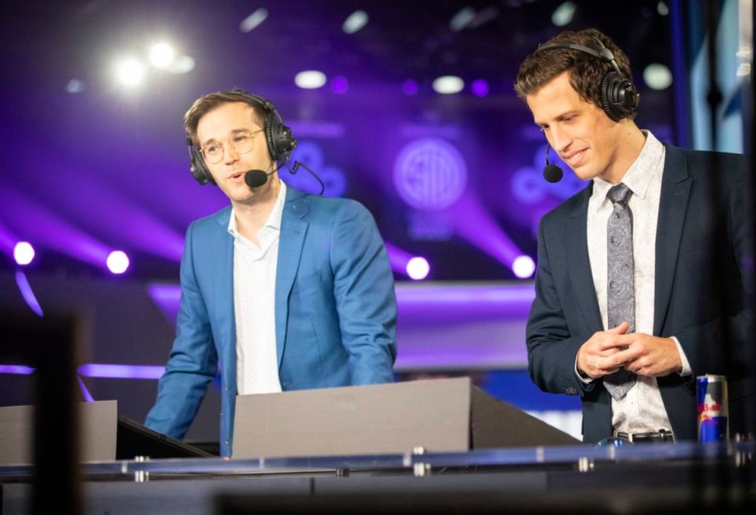

Kelby May who used to be an agent that helped LCS players sign and create their
contracts has made it clear that the contracts players agree to and sign goes
through many different people to make sure that it is benificial for both parties
and every player knows what their buyout is and how it can effect them. Meaning
that many people throughout the scene beleive that the players unable to find a team
during the offseason should not be complaining because the signed the contract knowing
its terms (Gafford).
What Do The Analysts have to say?

Sam "Kobe" Hartman-Kenzler - one of the LCS's most experienced commentator and
analyst- when asked about Jensen and many other proffesional
players not being able to find a team for 2022 "we're seeing several
high-profile, strong individual players for multiple
reasons that are not willing to play for a team that they think is just bad.
Because I think it will tarnish their reputation" (qtd. in Popko).
This shows that some players that could not find a team while it may not
have been made public they did have an oppurtunity to join a different team.
Jensen Teamless?
"The contract of longtime LCS mid laner Jensen has been terminated by
Team Liquid, a source told Dot Esports. Jensen’s release from Liquid comes
just over a year after he signed a three-year extension reported to be worth
more than $4 million" (Byers). Jensen is a long term LCS veterain who joined
the league back in 2015 and has consistently been one of the league best
players. During the 2021 worlds event Jensen has an outstanding performance
on Team Liquid but was still unable to make quarterfinals. While the
community's perspective on Jensen was very high that did not help
when it came to the 2021 offseason. Jensen tried many teams but was unable
to find one that would pay his contracts massive buyout. In the end Jensen
remains teamless for the 2022 spring season but fans are still hopeful they
will see him play again in summer.